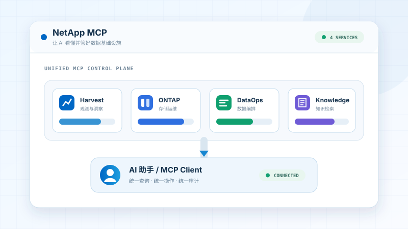
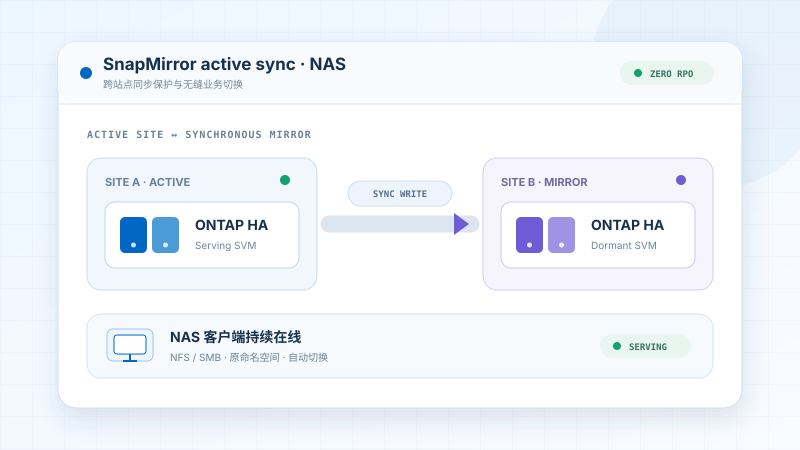
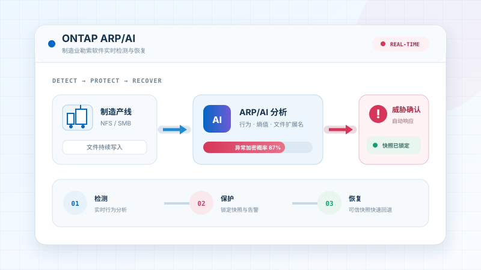
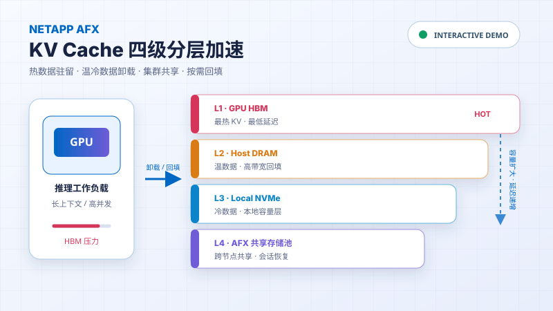
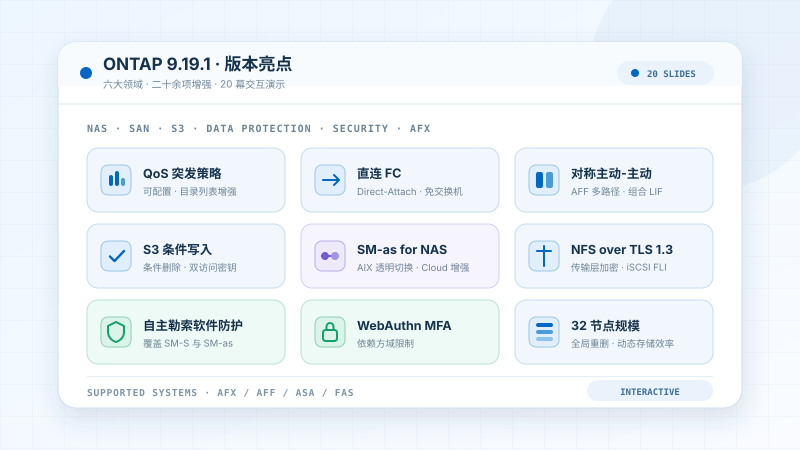

应用与演示
Bay 01 — 08Bay 01在线

NetApp Fusion
Fusion 容量查询
基于 Fusion 历史实测数据，支持精确配置查询、可用容量反查及加密截图查看。
密码登录后进入Bay 02在线

AIDE + AFX
制造业 AI 推理数据平台
交互展示从车间数据、AIDE 编目与检索，到 GPU 推理和产线知识助手的完整数据链路。
进入交互演示Bay 03在线
ONTAP MCP
ONTAP MCP 运维演示
用自然语言完成 ONTAP 卷开通、数据保护与多集群管理，交互展示 AI 到 REST API 的完整调用链路。
进入交互演示Bay 04在线

NetApp MCP
NetApp MCP 全景演示
集中展示 Harvest、ONTAP、DataOps 与 Knowledge MCP，让 AI 看懂并管好 NetApp 数据基础设施。
进入交互演示Bay 05在线

ONTAP 9.19.1
SnapMirror active sync for NAS
交互演示双站点 NAS 工作负载的同步复制、故障切换、规模规划与部署适配。
进入技术演示Bay 06在线

ONTAP ARP/AI
制造业勒索软件检测与恢复
交互展示异常加密行为的实时检测、快照锁定、告警响应与制造业务恢复路径。
进入交互演示Bay 07在线

NetApp AFX
KV Cache 分层加速
交互演示长上下文推理的显存压力，以及 KV Cache 在 HBM、DRAM、NVMe 与 AFX 共享存储池之间的分层、命中和回填。
进入交互演示Bay 08在线

ONTAP 9.19.1 Release
ONTAP 9.19.1 技术总览
20 幕交互演示，覆盖 NAS 性能与 QoS、SAN 连接与高可用、S3 语义完备性、业务连续性、纵深安全与 AFX 平台演进。
进入技术演示